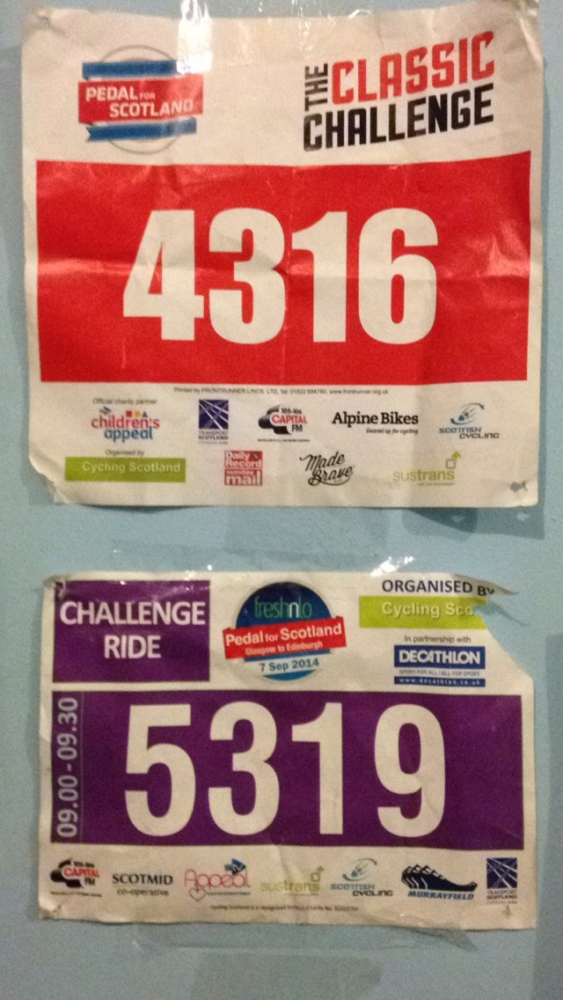
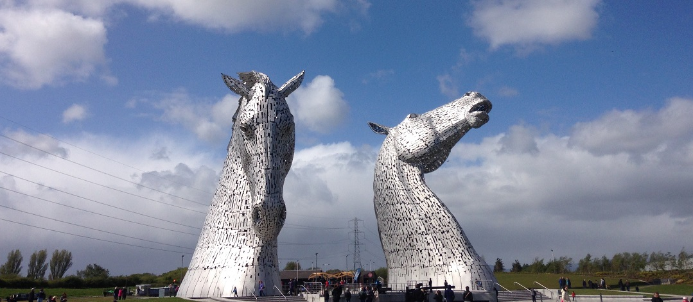
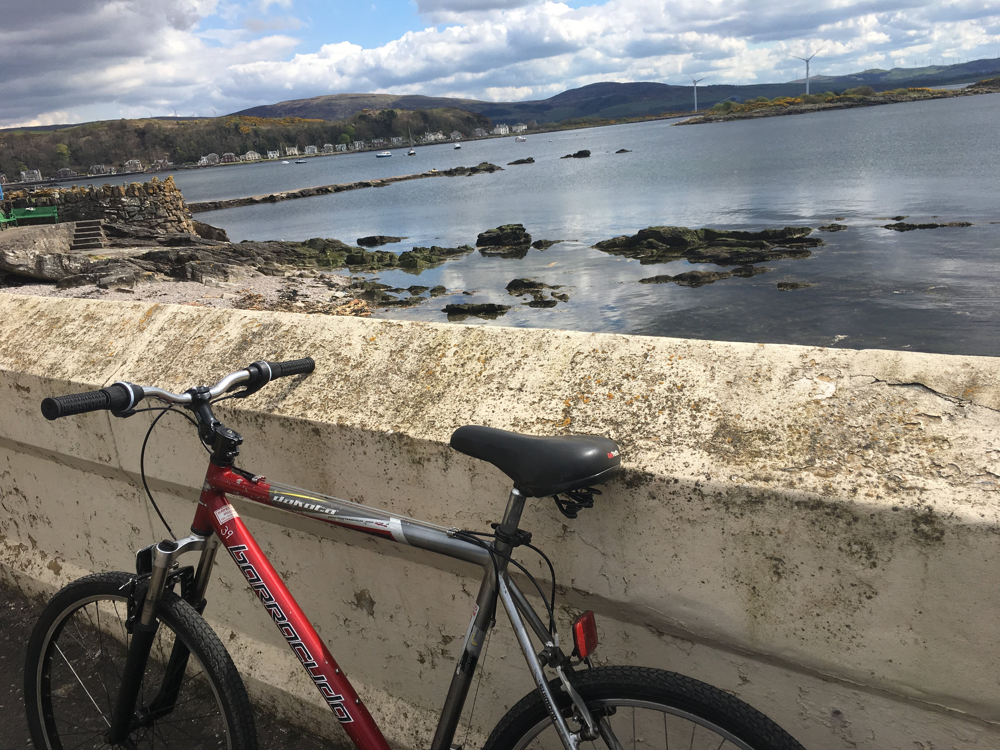

Pedal for Scotland 2019
Glasgow to Edinburgh
Last Pedal for scotland route

Pedal for Scotland 2015
Glasgow to Edinburgh
Last Pedal for Scotland to the BT Murrayfield Stadium

Glasgow to Falkirk Wheel then The Kelpies

Millport
With StepUp Scotland
